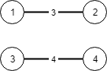

LC 200 305 323 947 1135 - Union Find
Table of Contents
Number of Islands
Link: Number of Islands
Problem description
Given a 2d grid map of '1's (land) and '0's (water), count the number of islands. An island is surrounded by water and is formed by connecting adjacent lands horizontally or vertically. You may assume all four edges of the grid are all surrounded by water.
Example 1:
Input:
11110
11010
11000
00000
Output: 1
Example 2:
Input:
11000
11000
00100
00011
Output: 3
Method & Code
Two approaches: DFS and Union Find.
DFS
Start at each cell with ‘1’, then DFS find all nodes that are connected with current node. Flip node’s ‘1’ to ‘0’ each time to reduce runtime.
Union Find
First find all nodes and mark them all as individual node. The traverse the whole grid, when two nodes are both ‘1’, union them and find root of them. If they have same root, then the number of islands should be reduced by 1.
/**
* DFS.
* When reaches a '1' then do DFS start at this point and mark all accessible point as visited.
* Iterate all cells in grid.
*
* @param grid given grid
* @return number of connected '1'
*/
public int numIslands(char[][] grid) {
int count = 0;
/* Corner case */
if (grid.length < 1) {
return count;
}
for (int i = 0; i < grid.length; i++) {
for (int j = 0; j < grid[0].length; j++) {
if (grid[i][j] == '1') {
count += 1;
grid[i][j] = '0';
dfs(grid, i, j);
}
}
}
return count;
}
/**
* DFS to access all accessible points based on current point.
*
* @param grid given grid
* @param i coord x
* @param j coord y
*/
private void dfs(char[][] grid, int i, int j) {
int[] direction = {1, -1, 0, 0, 0, 0, 1, -1};
grid[i][j] = '0';
for (int k = 0; k < 4; k++) {
int nextX = i + direction[k];
int nextY = j + direction[k + 4];
if (nextX > -1 && nextX < grid.length && nextY > -1 && nextY < grid[0].length && grid[nextX][nextY] == '1') {
dfs(grid, nextX, nextY);
}
}
}
/**
* Use union find to connect all nodes that are connected and count all islands.
*
* @param grid given grid
* @return number of islands
*/
public int unionFind(char[][] grid) {
/* Corner case */
if (grid == null || grid.length == 0 || grid[0].length == 0) {
return 0;
}
int[][] distance = {{1, 0}, {-1, 0}, {0, 1}, {0, -1}};
UnionFind uf = new UnionFind(grid);
int rows = grid.length;
int cols = grid[0].length;
for (int i = 0; i < rows; i++) {
for (int j = 0; j < cols; j++) {
if (grid[i][j] == '1') {
for (int[] d : distance) {
int x = i + d[0];
int y = j + d[1];
if (x >= 0 && x < rows && y >= 0 && y < cols && grid[x][y] == '1') {
int id1 = i * cols + j;
int id2 = x * cols + y;
uf.union(id1, id2);
}
}
}
}
}
return uf.count;
}
/**
* Union find class specially implemented for this problem.
*/
class UnionFind {
int[] father;
int count = 0;
/**
* Count father of each node. Initially, father of each node is itself.
*
* @param grid given grid
*/
UnionFind(char[][] grid) {
father = new int[grid.length * grid[0].length]; // contains all nodes in 2D array
for (int i = 0; i < grid.length; i++) {
for (int j = 0; j < grid[0].length; j++) {
if (grid[i][j] == '1') {
int id = i * grid[0].length + j;
father[id] = id;
count++;
}
}
}
}
/**
* Union two nodes that are both '1'.
* If two nodes are connected, then the # of islands reduced by 1.
*
* @param node1 first node
* @param node2 second node
*/
void union(int node1, int node2) {
int find1 = find(node1), find2 = find(node2);
if (find1 != find2) {
father[find1] = find2;
count--;
}
}
/**
* Find root of given node.
*
* @param node given node
* @return root of given node
*/
int find(int node) {
if (father[node] == node) {
return node;
}
father[node] = find(father[node]); // recursively find father
return father[node];
}
}
Number of Islands II
Link: Number of Islands II
Problem description
A 2d grid map of mrows and ncolumns is initially filled with water. We may perform an addLandoperation which turns the water at position (row, col) into a land. Given a list of positions to operate, count the number of islands after each addLandoperation. An island is surrounded by water and is formed by connecting adjacent lands horizontally or vertically. You may assume all four edges of the grid are all surrounded by water.
Example:
Input: m = 3, n = 3, positions = [[0,0], [0,1], [1,2], [2,1]]
Output: [1,1,2,3]
Explanation:
Initially, the 2d grid gridis filled with water. (Assume 0 represents water and 1 represents land).
0 0 0
0 0 0
0 0 0
Operation #1: addLand(0, 0) turns the water at grid[0][0] into a land.
1 0 0
0 0 0 Number of islands = 1
0 0 0
Operation #2: addLand(0, 1) turns the water at grid[0][1] into a land.
1 1 0
0 0 0 Number of islands = 1
0 0 0
Operation #3: addLand(1, 2) turns the water at grid[1][2] into a land.
1 1 0
0 0 1 Number of islands = 2
0 0 0
Operation #4: addLand(2, 1) turns the water at grid[2][1] into a land.
1 1 0
0 0 1 Number of islands = 3
0 1 0
Follow up:
Can you do it in time complexity O(k log mn), where k is the length of the positions?
Method & Code
Union find.
Each time, when convert a new water cell to land, check its neighbor. If this neighbor is not connected to current island, union it and reduce island number by 1.
Note that avoid the duplication that a cell is repeatedly converted to land.
/**
* Union find.
* Each time, when convert a new water cell to land, check its neighbor.
* If this neighbor is not connected to current island, union it and reduce island number by 1.
* Note that avoid the duplication that a cell is repeatedly converted to land.
*
* @param m m rows
* @param n n columns
* @param positions list of positions to operate
* @return count the number of islands after each addLand operation
*/
public List<Integer> numIslands2(int m, int n, int[][] positions) {
List<Integer> out = new ArrayList<>();
/* Corner case */
if (m <= 0 || n <= 0) {
return out;
}
int[] d = new int[]{1, -1, 0, 0, 0, 0, 1, -1};
int[] root = new int[m * n];
Arrays.fill(root, -1);
int count = 0;
for (int[] p : positions) {
int r = n * p[0] + p[1]; // new land
if (root[r] == -1) { // avoid duplication
root[r] = r;
count++;
for (int i = 0; i < 4; i++) {
int xx = d[i] + p[0], yy = d[i + 4] + p[1];
int id = n * xx + yy;
if (xx >= 0 && xx < m && yy >= 0 && yy < n && root[id] != -1) {
int f = find(root, id);
if (r != f) { // find island next to current island
root[r] = f;
r = f; // reset root for next neighbor
count--;
}
}
}
}
out.add(count);
}
return out;
}
/**
* Find root of given id.
*
* @param root array stores root of each node
* @param id find id
* @return root of current node
*/
public int find(int[] root, int id) {
while (id != root[id]) {
root[id] = root[root[id]];
id = root[id];
}
return id;
}
Number of Connected Components in an Undirected Graph
Link: Number of Connected Components in an Undirected Graph
Problem description
Given n nodes labeled from 0 to n - 1 and a list of undirected edges (each edge is a pair of nodes), write a function to find the number of connected components in an undirected graph.
Example 1:
Input: n = 5 and edges = [[0, 1], [1, 2], [3, 4]]
0 3
| |
1 --- 2 4
Output: 2
Example 2:
Input: n = 5 and edges = [[0, 1], [1, 2], [2, 3], [3, 4]]
0 4
| |
1 --- 2 --- 3
Output: 1
Note:
You can assume that no duplicate edges will appear in edges. Since all edges are undirected, [0, 1] is the same as [1, 0] and thus will not appear together in edges.
Given a 2d grid map of '1's (land) and '0's (water), count the number of islands. An island is surrounded by water and is formed by connecting adjacent lands horizontally or vertically. You may assume all four edges of the grid are all surrounded by water.
Example 1:
Input:
11110
11010
11000
00000
Output: 1
Example 2:
Input:
11000
11000
00100
00011
Output: 3
Method & Code
Classic 1D union find problem. The way to solve it is to find the root of each node.
Assume all nodes are unconnected and the # of unconnected nodes equal to n. If root of node is different, then reduce one on # of unconnected nodes. Finally, the # of unconnected nodes is the # of connected components.
/**
* Union find.
* Initially, consider all nodes as individual nodes.
* Then traverse all given edges. Union two vertices that connected by edge.
*
* @param n # of nodes
* @param edges edges connect nodes
* @return # of connected components in an undirected graph
*/
public int countComponents(int n, int[][] edges) {
int[] union = new int[n];
for (int i = 0; i < union.length; i++) {
union[i] = i; // count each node as individual node
}
for (int[] e : edges) {
int r1 = find(e[0], union);
int r2 = find(e[1], union);
if (r1 != r2) {
union[r1] = union[r2]; // union two nodes as connected
n--;
}
}
return n;
}
/**
* Find operation.
*
* @param i given node
* @param arr array of union situation
* @return root of current node
*/
private int find(int i, int[] arr) {
while (i != arr[i]) {
arr[i] = arr[arr[i]]; // update root if current node is not root
i = arr[i];
}
return i;
}
Most Stones Removed with Same Row or Column
Link: Most Stones Removed with Same Row or Column
Problem description
On a 2D plane, we place stones at some integer coordinate points. Each coordinate point may have at most one stone.
Now, a move consists of removing a stone that shares a column or row with another stone on the grid.
What is the largest possible number of moves we can make?
Example 1:
Input: stones = [[0,0],[0,1],[1,0],[1,2],[2,1],[2,2]]
Output: 5
Example 2:
Input: stones = [[0,0],[0,2],[1,1],[2,0],[2,2]]
Output: 3
Example 3:
Input: stones = [[0,0]]
Output: 0
Note:
1 <= stones.length <= 10000 <= stones[i][j] < 10000
Method & Code
Union find. Note that in this problem, it is not union find on stone, it is based on coord, i.e., x and y.
Count total connected island in whole map, the max move is the total # of 1 reduce # of islands.
private HashMap<Integer, Integer> m = new HashMap<>();
private int count = 0;
/**
* Union find.
* Count total connected island in whole map, the max move is the total # of 1 reduce # of islands.
*
* @param stones given array stores stone coord
* @return largest possible number of moves
*/
public int removeStones(int[][] stones) {
for (int[] stone : stones) {
union(stone[0], stone[1] + 10000); // reverse to avoid duplicated coord x and y
}
return stones.length - count;
}
/**
* Find father based on given x.
*
* @param x find father of this node
* @return father of x
*/
private int find(int x) {
if (m.putIfAbsent(x, x) == null) { // if current node is not root
count++; // one less island can be found
}
if (x != m.get(x)) {
m.put(x, find(m.get(x))); // recursively find father, reset father to avoid counting duplication
}
return m.get(x);
}
/**
* Union two nodes.
*
* @param id1 first node
* @param id2 second node
*/
private void union(int id1, int id2) {
int f1 = find(id1);
int f2 = find(id2);
if (f1 != f2) {
count--;
m.put(f1, f2);
}
}
Connecting Cities With Minimum Cost
Link: [Connecting Cities With Minimum Cost(https://leetcode.com/problems/connecting-cities-with-minimum-cost/)
Problem description
There are N cities numbered from 1 to N.
You are given connections, where each connections[i] = [city1, city2, cost] represents the cost to connect city1 and city2together. (A connection is bidirectional: connecting city1 and city2 is the same as connecting city2 and city1.)
Return the minimum cost so that for every pair of cities, there exists a path of connections (possibly of length 1) that connects those two cities together. The cost is the sum of the connection costs used. If the task is impossible, return -1.
Example 1:

Input: N = 3, connections = [[1,2,5],[1,3,6],[2,3,1]]
Output: 6
Explanation:
Choosing any 2 edges will connect all cities so we choose the minimum 2.
Example 2:

Input: N = 4, connections = [[1,2,3],[3,4,4]]
Output: -1
Explanation:
There is no way to connect all cities even if all edges are used.
Note:
1 <= N <= 100001 <= connections.length <= 100001 <= connections[i][0], connections[i][1] <= N0 <= connections[i][2] <= 10^5connections[i][0] != connections[i][1]
Method & Code
Sort connections by distance first, then union each node with sorted distance.
If there is a node that not connected into graph, return -1. Otherwise, return the min distance.
/**
* Union find.
*/
static class UnionFind {
int[] father;
int count;
/**
* Init of class.
*
* @param n # of cities
*/
public UnionFind(int n) {
father = new int[n];
for (int i = 0; i < father.length; i++) {
father[i] = i;
}
count = n;
}
/**
* Union two nodes in map.
*
* @param a first node
* @param b second node
*/
public void union(int a, int b) {
int find1 = find(a);
int find2 = find(b);
if (find1 != find2) {
father[find1] = find2;
count--;
}
}
/**
* Find parent of given node.
*
* @param x given node
* @return parent of given node
*/
public int find(int x) {
if (father[x] == x) {
return x;
}
father[x] = find(father[x]); // path compression
return father[x];
}
}
/**
* Sort connections by distance first, then union each node with sorted distance.
* If there is a node that not connected into graph, return -1.
* Otherwise, return the min distance.
*
* @param N given # of cities
* @param connections connections between cities with cost
* @return minimum cost for every pair of cities, there exists a path of connections connects two cities together
*/
public int minimumCost(int N, int[][] connections) {
Arrays.sort(connections, new Comparator<int[]>() {
@Override
public int compare(int[] o1, int[] o2) {
return o1[2] - o2[2];
}
}); // sort connections between each city with min cost
int min = 0;
UnionFind uf = new UnionFind(N);
for (int[] c : connections) {
int a = c[0], b = c[1];
if (uf.find(a) != uf.find(b)) {
uf.union(a, b);
min += c[2];
}
}
return (uf.count == 1) ? -1 : min;
}